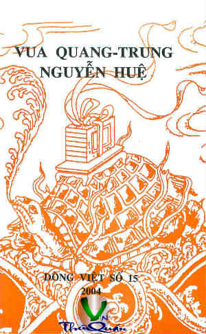

« Back
Vua Quang Trung Nguyễn Huệ
By Nhiều Tác Giả

Lời Giới Thiệu
Phần Thứ Nhất
Góp Thêm Về Phổ Hệ Tây Sơn Và Chân Dung Anh Em Họ
Di Tích Và Truyền Thuyết Về Nhà Tây Sơn
Đời Tây Sơn Qua Dân Ca Sấm Ký
Vó Ngựa Xông Pha
Quang Trung Đại Đế:
Tình Yêu Giữa
Ai Tư Vãn
Công Chúa Ngọc Hân:
Các Nghi Vấn
Thử Chẩn Bệnh
Phần Thứ Hai
Những Điểm Đặc Biệt
Vài Suy Nghĩ Lịch Sử Thời Tây Sơn
Chính Bình Vương Và
Tài Dùng Binh Của Nguyễn Huệ
Đại Pháo Trên Lưng Voi:
Thái Độ “Kẻ Sĩ”
Một Giai Thoại
Chính Sách Ngoại Giao